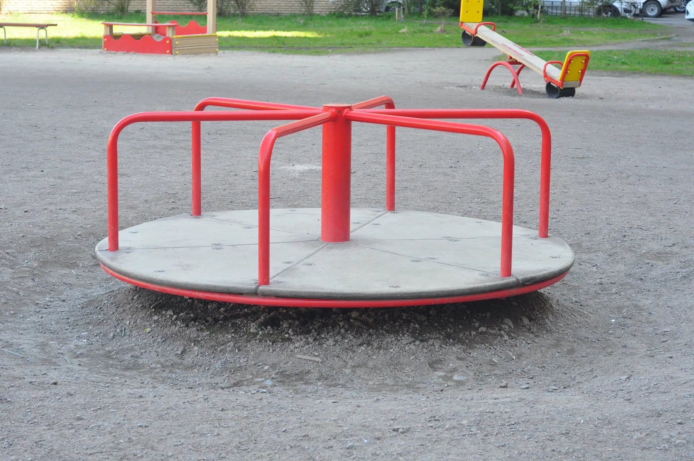

Ympyrärata: jaksonaika ja ratanopeus
Miksi karusellin reunalla seisova lapsi kiitää paljon lujempaa kuin keskitangon vieressä seisova, vaikka molemmat tekevät kierroksen yhtä nopeasti?
Pohjatiedot
- Nopeus on vektori. Sillä on suuruus ja suunta. Tasaisessa liikkeessä kappale kulkee yhtä pitkän matkan jokaisessa yhtä pitkässä ajassaluku Paikka, nopeus ja tasainen liike kuvaajina
- Jos kappaleeseen vaikuttavien voimien summa on nolla, kappale on levossa tai liikkuu tasaisesti suoraanluku Vuorovaikutus ja voima: Newtonin ensimmäinen ja kolmas laki
- Kiihtyvyys kertoo, kuinka nopeasti kappaleen nopeus muuttuuluku Kiihtyvyys ja tasaisesti kiihtyvä liike
Ydinpolku: tee vaiheet järjestyksessä. Ydinpolulla ei vain lasketa. Siinä myös tutkitaan, selitetään ja piirretään kuvaajia. Valinnainen-tehtävät ovat lisäharjoittelua. Valinnaisia tehtäviä on 6.
Luvun tärkeät käsitteet Vapaaehtoinen
Tutustu luvun tärkeisiin käsitteisiin. Voit kirjoittaa niiden merkitykset sinulle vahvimmalla kielellä tai useammalla kielellä.
- Ympyräliike
- Liike, jonka rata on ympyrä. Kappale pysyy koko ajan yhtä kaukana keskipisteestä.
- Ratanopeus
- Nopeuden suuruus ympyräradalla: kuljettu matka jaettuna ajalla. Nopeus osoittaa radan suuntaan.
- Kierrosaika
- Aika, jossa kappale kiertää radan kerran.
- Pyörimistaajuus
- Kertoo, montako kierrosta kappale tekee sekunnissa. Se on kierrosajan käänteisluku.
Pohdinta
Leikkikentän karuselli pyörii tasaisesti. Aino seisoo aivan reunalla. Eetu seisoo keskitangon vieressä. Kumpikin tekee kierroksen samassa ajassa. Aino tuntee tuulen kasvoillaan ja pitää kaiteesta kiinni kahdella kädellä. Eetu seisoo melkein rennosti. Sitten Ainon ote lipsahtaa, ja hän putoaa hiekalle.
Karusellin kaikki kohdat tekevät kierroksen yhtä nopeasti. Miksi reunalla liikutaan silti lujempaa? Mihin suuntaan se lähtee, jonka ote lipsahtaa?
Valinnainen Kertaa: liike ilman kokonaisvoimaa
Ennusta
Tee ennusteet ennen tutkimista 2 kysymystä
Ennuste 1: naru katkeaa
Ennuste 2: reunalla vai keskellä
Tutki
Pyöritä naruun sidottua kiekkoa jäällä. Katkaise naru ja vertaa nopeusvektoreita. Oikea tai alempi paneeli näyttää, miten nopeus muuttuu.
Simulaatio
Käyttöohje
Säädä radan säde $r$ ja kierrosaika $T$. Paina sitten Käynnistä. Sininen nuoli kiekon kohdalla on nopeus $\overline{v}$. Valinta Näytä aiemmat nopeudet jättää kuvaan kiekon paikat ja nopeudet. Ne ovat viimeiseltä kierrokselta kahdentoista yhtä pitkän aikavälin päästä. Kun kiekko kiertää, sama painike muuttuu painikkeeksi Katkaise naru. Se päästää kiekon irti. Kiekko pysähtyy kaukalon laitaan. Lukemiin tulevat kulma $\alpha$ reitin ja narun suunnan välillä sekä vauhti $v_\text{irti}$ katkeamisen jälkeen. Paneeli Nopeuden muutos piirtää kaksi nopeutta samasta pisteestä. Toinen on nopeus $\overline{v}_1$ kahdestoistaosakierroksen takaa. Toinen on nykyinen nopeus $\overline{v}_2$. Musta nuoli on nopeuden muutos $\Delta\overline{v}$. Kun muutat säädintä, kiekko palaa alkuun. Nopeus muuttaa vain animaation tahtia, ei mitään lukemaa. Hidas tahti auttaa valitsemaan katkaisukohdan.
Mallin oletukset
Kiekko liukuu vaakasuoralla jäällä. Kitkaa ja ilmanvastusta ei ole. Naru pitää kiekon ympyräradalla, ja vauhti pysyy samana. Liike on siis tasaista ympyräliikettä. Kun naru katkeaa, kiekkoon ei vaikuta vaakasuunnassa voimaa. Kiekko jatkaa suoraan tasaisella nopeudella. Pystysuorat voimat ovat paino ja jään tukivoima. Ne kumoavat toisensa, eikä niitä piirretä. Paneelin Nopeuden muutos nuolilla on oma mittakaavansa. Nopeusvektori piirretään aina yhtä pitkänä. Paneeli näyttää siis suunnan muutoksen suhteessa vauhtiin. Kaikki luvut ovat mallin arvoja.
Laskennan selitys
Pyörimistaajuus on $f = \tfrac{1}{T}$ ja ratanopeus $v = \tfrac{2\pi r}{T}$. Kiekon paikka lasketaan joka hetki ympyrältä, jonka säde on $r$. Yksi kierros kestää ajan $T$. Kuljettu matka on $s = v t$. Luku $N$ on täysien kierrosten määrä ennen katkeamista. Katkeamisen jälkeen paikka on katkeamiskohta plus $\overline{v}\,\Delta t$. Kulma $\alpha$ lasketaan kiekon todellisesta siirtymästä katkeamisen jälkeen ja narun suunnasta katkeamishetkellä. Vauhti $v_\text{irti}$ on siirtymän pituus jaettuna kuluneella ajalla. Paneelin $|\Delta\overline{v}|$ on vektorin $\overline{v}_2 - \overline{v}_1$ pituus. Nopeuksien aikaväli on $\Delta t = \tfrac{T}{12}$.
Koe 1: naru katkeaa
Testaa ennuste 1. Kierrosaika pysyy vakiona. Valitse säde ja paina Käynnistä. Paina sitten haluamassasi kohdassa samaa painiketta, jossa lukee nyt Katkaise naru. Katkaise naru selvästi eri kohdissa rataa. Katkaise se esimerkiksi silloin, kun kiekko on radan ylä- ja vasemmassa reunassa. Katso, mihin suuntaan kiekko lähtee kussakin kohdassa. Kun kiekko on pysähtynyt laitaan, kirjaa mittaus. Taulukkoon tulevat kulma $\alpha$ reitin ja narun suunnan välillä, ratanopeus $v$ ennen katkeamista ja vauhti $v_\text{irti}$ sen jälkeen. Tee mittaus eri katkaisukohdissa ainakin kahdella eri säteellä. Näet silloin, riippuuko lähtösuunta katkaisukohdasta vai säteestä. Kun muutat sädettä, kiekko palaa alkuun.
Alkutila: radan säde $r$ = $2\,\text{m}$, kierrosaika $T$ = $4\,\text{s}$. Vakiona: kierrosaika $T$. Muutetaan: radan säde $r$.
| radan säde $r$ | $\alpha$ $(^\circ)$ | $v$ $(\text{m/s})$ | $v_\text{irti}$ $(\text{m/s})$ |
|---|
Koe 2: säde muuttuu
Testaa ennuste 2. Kierrosaika on $4{,}0\,\text{s}$ ja pysyy vakiona. Muuta vain sädettä. Kirjaa ratanopeus ainakin säteillä $1{,}0\,\text{m}$ ja $2{,}0\,\text{m}$. Voit kirjata myös säteen $3{,}0\,\text{m}$. Käynnistä välillä ja vertaa sinisen nuolen pituutta.
Alkutila: radan säde $r$ = $1\,\text{m}$, kierrosaika $T$ = $4\,\text{s}$. Vakiona: kierrosaika $T$. Muutetaan: radan säde $r$.
| radan säde $r$ | $v$ $(\text{m/s})$ | $s$ $(\text{m})$ | $t$ $(\text{s})$ |
|---|
Valinnainen Koe 3: kierrosaika muuttuu
Pidä säde $2{,}0\,\text{m}$ vakiona ja muuta kierrosaikaa. Kirjaa pyörimistaajuus ja ratanopeus esimerkiksi kierrosajoilla $2\,\text{s}$, $4\,\text{s}$ ja $8\,\text{s}$. Miten ratanopeus muuttuu, kun kierrosaika kaksinkertaistuu?
Alkutila: radan säde $r$ = $2\,\text{m}$, kierrosaika $T$ = $2\,\text{s}$. Vakiona: radan säde $r$. Muutetaan: kierrosaika $T$.
| kierrosaika $T$ | $f$ (1/s) | $v$ $(\text{m/s})$ |
|---|
Johtopäätös: suunta ja ratanopeus
Kirjoita taulukoidesi perusteella vastaukset.
Mihin suuntaan kiekko lähti, kun naru katkesi? Muuttuiko sen vauhti? Miten ratanopeus riippui säteestä, kun kierrosaika pysyi samana? Miksi kiekon nopeus muuttuu ympyräradalla, vaikka vauhti on vakio?
Mallivastaus
Naru katkesi missä kohdassa tahansa, ja kiekon reitti oli narun suuntaan nähden kulmassa $90{,}0^\circ$. Kiekko lähti radan tangentin suuntaan. Sen vauhti pysyi samana kuin ratanopeus ennen katkeamista, esimerkiksi säteellä $2{,}0\,\text{m}$ se oli $3{,}14\,\text{m/s}$. Kun kierrosaika oli $4{,}0\,\text{s}$, ratanopeus oli säteellä $1{,}0\,\text{m}$ $1{,}57\,\text{m/s}$ ja säteellä $2{,}0\,\text{m}$ $3{,}14\,\text{m/s}$. Kaksinkertainen säde antoi kaksinkertaisen ratanopeuden, koska kehän pituus $2\pi r$ kaksinkertaistuu ja aika on sama. Ympyräradalla nopeuden suunta kääntyy koko ajan. Siksi nopeus muuttuu ($|\Delta\overline{v}|$ ei ole nolla), vaikka vauhti on vakio. Katkeamisen jälkeen $\Delta\overline{v}$ oli nolla. Luvut ovat mallin arvoja, ja mallissa jäällä ei ole kitkaa.
Arvioi oma vastauksesi
Merkitse kohdat, jotka sinun vastauksessasi jo on.
Kertaa asia teoriasta ja harjoittele tehtävillä.
Teoria
Ydinajatus
Kappale on ympyräliikkeessä, kun sen rata on ympyrä. Kappale pysyy koko ajan samalla etäisyydellä radan keskipisteestä. Tämä etäisyys on radan säde $r$. Karusellissa seisova lapsi, liikenneympyrää kiertävä auto ja Maata kiertävä satelliitti ovat ympyräliikkeessä tai lähes siinä. Oletetaan, että kappale kulkee jokaisessa yhtä pitkässä ajassa yhtä pitkän matkan. Silloin nopeuden suuruus eli vauhti pysyy samana. Liike on silloin tasaista ympyräliikettä. Tässä luvussa katsotaan vain tasaista ympyräliikettä.
Nopeus osoittaa tangentin suuntaan
Nopeus on vektori $\overline{v}$. Vektorilla on suuruus ja suunta. Nopeus osoittaa joka hetki siihen suuntaan, johon kappale on juuri liikkumassa. Ympyräradalla tämä suunta on radan tangentin suunta. Tangentti on suora, joka sivuaa ympyrää yhdessä pisteessä. Se on kohtisuorassa keskipisteestä piirrettyä sädettä vastaan. Kun kappale kiertää, tangentin suunta kääntyy koko ajan. Tasaisessa ympyräliikkeessä nopeusvektorit ovat siis kaikki yhtä pitkiä, mutta ne osoittavat eri suuntiin. Nopeuden suuruus pysyy samana, mutta nopeus muuttuu.
Kun naru katkeaa
Naruun sidottu kiekko kiertää jäällä tappia. Naru vetää kiekkoa kohti tappia. Se kääntää kiekon liikkeen suuntaa koko ajan. Oletetaan, että naru katkeaa. Silloin kiekkoon ei enää vaikuta vaakasuunnassa voimaa. Jään kitka on pieni. Pystysuorat voimat ovat paino ja jään tukivoima, ja ne kumoavat toisensa. Newtonin ensimmäisen lain mukaan kiekko jatkaa silloin tasaista suoraviivaista liikettä. Sen nopeus on sama kuin katkeamishetkellä. Kiekko lähtee siis radan tangentin suuntaan. Se ei lähde suoraan poispäin tapista. Samoin pyörivän sateenvarjon reunasta irtoavat vesipisarat lähtevät tangentin suuntaan.
Suunnan muutos on nopeuden muutos
Nopeuden muutoksen $\Delta\overline{v}$ näkee, kun piirtää kaksi peräkkäistä nopeusvektoria samasta pisteestä alkaen. Muutos $\Delta\overline{v}$ on se vektori, joka pitää lisätä vektoriin $\overline{v}_1$, jotta saadaan $\overline{v}_2$. Ympyräradalla vektorit ovat yhtä pitkiä, mutta niiden suunnat ovat erilaiset. Siksi $\Delta\overline{v}$ ei ole nolla, kun aikaväli on lyhyempi kuin yksi kierros. Kiihtyvyys tarkoittaa nopeuden muutosta. Se ei tarkoita pelkästään vauhdin muutosta. Tasaisessa ympyräliikkeessä kappale siis kiihtyy. Newtonin toisen lain mukaan siihen vaikuttaa silloin kokonaisvoima, joka ei ole nolla. Tämä kokonaisvoima osoittaa ympyrän keskipisteen puolelle eli radan sisäpuolelle. Se ei osoita ulospäin. Kiihtyvyyden suuruus lasketaan luvussa Normaalikiihtyvyys ja ympyräliikkeen liikeyhtälö.
Ratanopeus
Tasaista ympyräliikettä kuvaa kierrosaika $T$. Se on aika, jossa kappale kiertää radan kerran. Kierrosajan käänteisluku on pyörimistaajuus $f$. Se kertoo, kuinka monta kierrosta kappale tekee aikayksikössä:
$$f = \frac{1}{T}$$
missä $f$ on pyörimistaajuus ($\tfrac{1}{\text{s}}$) ja $T$ kierrosaika ($\text{s}$). Kun kierrosaika on $T = 0{,}50\,\text{s}$, kappale tekee $2{,}0$ kierrosta sekunnissa. Silloin $f = 2{,}0\,\tfrac{1}{\text{s}}$. Pyörimistaajuus ilmoitetaan usein myös kierroksina minuutissa. Esimerkiksi $45\,\tfrac{1}{\text{min}}$ muunnetaan sijoittamalla $1\,\text{min} = 60\,\text{s}$. Silloin $45\,\tfrac{1}{\text{min}} = \tfrac{45}{60\,\text{s}} = 0{,}75\,\tfrac{1}{\text{s}}$.

Yhdellä kierroksella kappale kulkee ympyrän kehän pituisen matkan $2\pi r$. Siihen kuluu kierrosaika $T$. Vauhti on tasainen, joten ratanopeus on kuljettu matka jaettuna ajalla. Ratanopeus on nopeuden suuruus ympyräradalla:
$$v = \frac{2\pi r}{T} = 2\pi r f$$
missä $v$ on ratanopeus ($\text{m/s}$), $r$ radan säde ($\text{m}$), $T$ kierrosaika ($\text{s}$) ja $f$ pyörimistaajuus ($\tfrac{1}{\text{s}}$). Jälkimmäinen muoto saadaan, kun $\tfrac{1}{T}$ korvataan pyörimistaajuudella $f$.
Kaavasta näkyy alun kysymyksen vastaus. Karusellin kaikki kohdat tekevät kierroksen samassa ajassa $T$. Reunalla seisova lapsi kiertää kuitenkin suuremman ympyrän. Kun kierrosaika on sama, ratanopeus on suoraan verrannollinen säteeseen. Lapsi, joka seisoo kaksi kertaa kauempana keskipisteestä, kulkee samassa ajassa kaksi kertaa pidemmän matkan. Hänen ratanopeutensa on siis kaksinkertainen. Samalla säteellä kierrosajan puolittaminen kaksinkertaistaa ratanopeuden.
Yleinen virhekäsitys
Moni ajattelee, että tasaisessa ympyräliikkeessä nopeus ei muutu, koska nopeusmittari näyttää koko ajan samaa lukemaa. Mittari näyttää kuitenkin vain nopeuden suuruuden eli vauhdin. Nopeus on vektori, ja sen suunta kääntyy koko ajan. Siksi nopeus muuttuu ja kappale kiihtyy. Ilman kokonaisvoimaa kappale ei pysyisi ympyräradalla. Se jatkaisi suoraan.
Toinen virhe on luulla, että narun katketessa kappale lentää suoraan poispäin keskipisteestä. Mikään voima ei työnnä kappaletta ulospäin. Kun naru lakkaa vetämästä, kappale jatkaa sen hetkisen nopeutensa suuntaan eli radan tangentin suuntaan.
Laskuissa tavallisia virheitä on kaksi. Ensimmäinen on halkaisijan sijoittaminen säteen paikalle kaavaan $v = \tfrac{2\pi r}{T}$. Toinen on pyörimistaajuuden sijoittaminen kierroksina minuutissa. Se pitää ensin muuntaa kierroksiksi sekunnissa.
Tiivistelmä
- Ympyräliikkeessä kappaleen rata on ympyrä, jonka säde on $r$. Tasaisessa ympyräliikkeessä vauhti pysyy samana.
- Nopeus $\overline{v}$ on joka hetki radan tangentin suuntainen. Suunta muuttuu koko ajan. Siksi nopeus muuttuu ja kappale kiihtyy, vaikka vauhti on vakio.
- Kun kappaleeseen ei enää vaikuta kokonaisvoimaa, se jatkaa suoraan radan tangentin suuntaan.
- Kierrosaika $T$ on yhden kierroksen aika. Pyörimistaajuus $f = \tfrac{1}{T}$ on kierrosten määrä aikayksikössä.
- Ratanopeus $v = \tfrac{2\pi r}{T} = 2\pi r f$ on suoraan verrannollinen säteeseen, kun kierrosaika on sama.
Valinnainen Palaa ennusteisiisi
Vertaa ennusteitasi mallin arvoihin ja kaavaan $v = \tfrac{2\pi r}{T}$. Palaa sitten alun kysymykseen. Miksi Aino liikkuu karusellin reunalla lujempaa kuin Eetu? Mihin suuntaan hän lähtee, kun hänen otteensa lipsahtaa?
Haluaisitko muuttaa ennustettasi?
Esimerkit
Kun olet lukenut teorian, tee ohjatut esimerkit. Ensin katsot mallilaskun vaihe vaiheelta. Sitten teet valinnat itse. Vihjeet auttavat, jos jäät jumiin.
Esimerkki 1: Pesukoneen linkous
Pesukoneen rummun halkaisija on $46\,\text{cm}$. Linkouksessa rumpu pyörii $1200$ kierrosta minuutissa. Kuinka suuri on rummun seinää vasten painuneen sukan ratanopeus?
Vaihe 1/7
Tunnetut ja kysytty. Rummun halkaisija on $d = 46\,\text{cm}$. Pyörimistaajuus on $f = 1200\,\tfrac{1}{\text{min}}$. Kysytään sukan ratanopeutta $v$.
Vaihe 2/7
Periaate. Sukka pyörii rummun seinällä rummun mukana. Se on siis tasaisessa ympyräliikkeessä. Radan säde on rummun säde $r = \tfrac{d}{2}$. Yhdellä kierroksella sukka kulkee kehän pituisen matkan $2\pi r$. Kierroksia on $f$ aikayksikössä. Siksi ratanopeus on $v = 2\pi r f$.
Vaihe 3/7
Kaava ratkaistuna. Sijoitetaan säde halkaisijan avulla:
$$\begin{aligned} v &= 2\pi r f, \quad r = \frac{d}{2} \\ v &= \pi d f \end{aligned}$$
Vaihe 4/7
Yksikkömuunnokset. Halkaisija on
Pyörimistaajuus on
Vaihe 5/7
Sijoitus. $$\begin{aligned} v &= \pi d f \\ &= \pi \cdot 0{,}46\,\text{m} \cdot 20\,\tfrac{1}{\text{s}} \\ &= 28{,}90\,\text{m/s} \end{aligned}$$
Vaihe 6/7
Tulos. Sukan ratanopeus on noin $29\,\text{m/s}$. Tulos annetaan kahdella merkitsevällä numerolla. Syy on, että halkaisija $46\,\text{cm}$ on annettu kahdella numerolla.
Vaihe 7/7
Järkevyys. Rummun kehä on $\pi \cdot 0{,}46\,\text{m} \approx 1{,}45\,\text{m}$. Rumpu pyörii $20$ kierrosta sekunnissa. Sukka kulkee siis sekunnissa noin $20 \cdot 1{,}45\,\text{m} \approx 29\,\text{m}$. Kierrosaika on $T = \tfrac{1}{f} = 0{,}050\,\text{s}$. Kaava
antaa saman tuloksen $28{,}9\,\text{m/s}$. Se on noin
Se on moottoritien nopeuden luokkaa, ja se sopii nopeaan linkoukseen.
Valinnainen Esimerkki 2: Etsi virhe
Valinnainen Esimerkki 3: Sovella uuteen tilanteeseen
Maa kiertää Aurinkoa lähes ympyrärataa. Radan säde on $1{,}50 \cdot 10^{11}\,\text{m}$. Yksi kierros kestää $365$ vuorokautta. Kuinka suuri on Maan ratanopeus? Vastaa yksikössä km/s.
Vihje 1: ohjaava kysymys
Kuinka pitkän matkan Maa kulkee yhdellä kierroksella? Kuinka monta sekuntia on $365$ vuorokaudessa?
Vihje 2: mikä yhteys
$v = \dfrac{2\pi r}{T}$, missä $T = 365 \cdot 24 \cdot 3600\,\text{s}$.
Vihje 3: välivaihe
$T = 3{,}1536 \cdot 10^{7}\,\text{s}$, joten
Muunna lopuksi metrit kilometreiksi.
Näytä ratkaisu
Annettu
radan säde $r = 1{,}50 \cdot 10^{11}\,\text{m}$, kierrosaika $T = 365\,\text{vrk}$
Kysytty
Maan ratanopeus $v$ yksikössä $\text{km/s}$
Periaate
Maa kiertää Aurinkoa lähes ympyrärataa ja lähes tasaisella vauhdilla. Sitä voi siis pitää tasaisena ympyräliikkeenä. Yhdellä kierroksella Maa kulkee radan kehän $2\pi r$ ajassa $T$.
Kaava
$$v = \frac{2\pi r}{T}$$
Muunnokset
Lopuksi $1\,\text{m} = 0{,}001\,\text{km}$.
Sijoitus
Vastaus
$29{,}9\,\text{km/s}$
Vastauksessa on kolme merkitsevää numeroa, koska radan säteessä $1{,}50 \cdot 10^{11}\,\text{m}$ on kolme.
Järkevyys
Radan kehä on noin $9{,}4 \cdot 10^{8}\,\text{km}$. Vuodessa on noin $3{,}2 \cdot 10^{7}\,\text{s}$. Vauhti on siis noin $30\,\text{km}$ sekunnissa eli yli $100\,000\,\text{km/h}$. Maa kulkee noin sata kertaa nopeammin kuin matkustajalentokone. Se sopii planeetan rataan.
Kertaa luvun käsitteet
Jos valitset Kertaa myöhemmin, kortti menee kertauspakkaasi.
- Ympyräliike
- Liike, jossa kappaleen rata on ympyränmuotoinen.
- Ratanopeus
- Ympyrärataa pitkin liikkuvan kappaleen nopeuden suuruus.$$v = \dfrac{2\pi r}{T}$$
Itsearvio
Arvioi lopuksi, osaatko luvun asiat. Jos vastaus on väärin, saat vinkin, mitä kerrata.
1. Pohdintatehtävä
Vastaa ensin itse. Avaa vastaus vasta sitten.
- Karuselli tekee $15$ kierrosta minuutissa. Mikä on sen pyörimistaajuus yksikössä $\tfrac{1}{\text{s}}$? Mikä on sen kierrosaika?
Vastaus
$f$$= 15\,\tfrac{1}{\text{min}}$$= \dfrac{15}{60\,\text{s}}$$= 0{,}25\,\tfrac{1}{\text{s}}$$T$$= \dfrac{1}{f}$$= \dfrac{1}{0{,}25\,\tfrac{1}{\text{s}}}$$= 4{,}0\,\text{s}$ - Pyörivän levyn kohta A on etäisyydellä $3{,}0\,\text{cm}$ akselista. Kohta B on etäisyydellä $9{,}0\,\text{cm}$ akselista. Kuinka moninkertainen on B:n ratanopeus A:n ratanopeuteen verrattuna?
Vastaus
Kolminkertainen. Kohdilla on sama kierrosaika. Silloin ratanopeus $v = \tfrac{2\pi r}{T}$ on suoraan verrannollinen säteeseen. Etäisyyksien suhde on siis ratanopeuksien suhde:
$\dfrac{9{,}0\,\text{cm}}{3{,}0\,\text{cm}}$$= 3{,}0$
2. Käsitetehtävä
3. Laskutehtävä: Ratanopeus
Kulmahiomakoneen laikan halkaisija on $125\,\text{mm}$. Laikka pyörii $11\,000$ kierrosta minuutissa. Kuinka suuri on laikan reunan ratanopeus? Vastaa yksikössä m/s.
Vihje 1: ohjaava kysymys
Mikä on laikan säde metreinä? Kuinka monta kierrosta laikka pyörii sekunnissa?
Vihje 2: mikä yhteys
$v = 2\pi r f$, missä $r = \tfrac{d}{2}$, eli $v = \pi d f$.
Vihje 3: välivaihe
Näytä ratkaisu
Annettu
laikan halkaisija $d = 125\,\text{mm}$, pyörimistaajuus $f = 11\,000\,\tfrac{1}{\text{min}}$
Kysytty
laikan reunan ratanopeus $v$ yksikössä $\text{m/s}$
Periaate
Laikan reuna on tasaisessa ympyräliikkeessä. Radan säde on puolet halkaisijasta. Joka kierroksella reuna kulkee kehän pituisen matkan $2\pi r = \pi d$. Kierroksia on $f$ aikayksikössä.
Kaava
$v = 2\pi r f$ ja $r = \tfrac{d}{2}$, josta
$$v = \pi d f$$
Muunnokset
Sijoitus
Vastaus
$72{,}0\,\text{m/s}$
Vastauksessa on kolme merkitsevää numeroa, koska halkaisijassa $125\,\text{mm}$ on kolme.
Järkevyys
Kehä on noin $0{,}4\,\text{m}$. Laikka pyörii noin $180$ kierrosta sekunnissa. Reuna kulkee siis noin $0{,}4\,\text{m} \cdot 180 \approx 72\,\text{m}$ sekunnissa eli noin $260\,\text{km/h}$. Hiomalaikoissa on merkintä suurimmasta sallitusta ratanopeudesta, tavallisesti $80\,\text{m/s}$. Tulos on siis uskottava.
Ehdotus: yksi vastaus ei kerro kaikkea osaamisestasi. Kertaa asia teoriasta ja tee ydintehtävät.
Valinnainen 4. Selitystehtävä: Selitä ja siirrä
Moukarinheittäjä pyörittää moukaria kahvasta ja päästää siitä irti. Ylhäältä katsottuna moukari kiertää ennen irrotusta lähes ympyrärataa.
Mihin suuntaan moukari lähtee irrotushetkellä? Miksi heittäjän on ajoitettava irrotus oikein, jotta moukari lentää sektoriin?
Mallivastaus
Moukarin nopeus on joka hetki radan tangentin suuntainen. Kun heittäjä päästää irti, vaijeri lakkaa vetämästä moukaria kohti keskipistettä. Vaakasuunnassa ei vaikuta enää voimaa (ilmanvastus on pieni). Newtonin ensimmäisen lain mukaan moukari jatkaa vaakasuunnassa irrotushetken nopeudella eli tangentin suuntaan. Se ei lennä suoraan poispäin heittäjästä. Tangentin suunta kääntyy kierroksen aikana koko ajan. Siksi moukari lentää sektoriin vain, jos irrotus tapahtuu siinä kohdassa rataa, jossa tangentti osoittaa sektoriin.
Arvioi oma vastauksesi
Merkitse kohdat, jotka sinun vastauksessasi jo on.
Kertaa asia teoriasta ja harjoittele tehtävillä.
Arvioi vielä, mitä opit
Itsearviosi tulee mukaan luvun tehtävien palautukseen.
Tehtävät
Taso 1 · perusharjoitus 9 tehtävää
Yksi kaava tai yksi päättelyaskel. Tee ensin ydintehtävät. Loput ovat lisäharjoitusta.
- Tehtävä 3-1Ydintehtävä
Leikkikentän karusellin reunalla seisoo lapsi. Hän kiertää ympyrärataa, jonka säde on $2{,}5\,\text{m}$. Karuselli tekee yhden kierroksen ajassa $6{,}0\,\text{s}$. Kuinka suuri on lapsen ratanopeus?
Vastaus
$2{,}6\,\text{m/s}$
Näytä ratkaisu
Annettu
radan säde $r = 2{,}5\,\text{m}$, kierrosaika $T = 6{,}0\,\text{s}$
Kysytty
lapsen ratanopeus $v$ yksikössä $\text{m/s}$
Periaate
Karuselli pyörii tasaisesti, joten lapsi on tasaisessa ympyräliikkeessä. Yhdellä kierroksella hän kulkee kehän pituisen matkan $2\pi r$. Siihen kuluu aika $T$. Ratanopeus on siis matka jaettuna ajalla.
Kaava
$v = \dfrac{2\pi r}{T}$
Muunnokset
Ei tarvita. Säde on metreinä ja aika sekunteina.
Sijoitus
$v$$= \dfrac{2\pi \cdot 2{,}5\,\text{m}}{6{,}0\,\text{s}}$$= \dfrac{15{,}71\,\text{m}}{6{,}0\,\text{s}}$$= 2{,}618\,\text{m/s}$Vastaus
$2{,}6\,\text{m/s}$
Vastauksessa on kaksi merkitsevää numeroa, kuten lähtötiedoissa: säteessä $2{,}5\,\text{m}$ ja kierrosajassa $6{,}0\,\text{s}$.
Järkevyys
Kehä on noin $16\,\text{m}$. Se kierretään kuudessa sekunnissa. Vauhti on siis vajaat $3\,\text{m/s}$ eli noin $9\,\text{km/h}$. Se on nopeampi kuin reipas kävely, ja se sopii karusellin reunalle.
- Tehtävä 3-2
Pöytätuulettimen siiven kärki on etäisyydellä $0{,}20\,\text{m}$ akselista. Siivet pyörivät pyörimistaajuudella $15\,\tfrac{1}{\text{s}}$. Kuinka suuri on siiven kärjen ratanopeus?
Vastaus
$19\,\text{m/s}$
Näytä ratkaisu
Annettu
kärjen etäisyys akselista $r = 0{,}20\,\text{m}$, pyörimistaajuus $f = 15\,\tfrac{1}{\text{s}}$
Kysytty
siiven kärjen ratanopeus $v$ yksikössä $\text{m/s}$
Periaate
Siiven kärki on tasaisessa ympyräliikkeessä. Radan säde on kärjen etäisyys akselista. Jokaisella kierroksella kärki kulkee matkan $2\pi r$. Kierroksia tulee $f$ sekunnissa. Sekunnissa kuljettu matka on siis $2\pi r f$.
Kaava
$v = 2\pi r f$
Muunnokset
Ei tarvita. Yksikkö on oikea, koska $\text{m} \cdot \tfrac{1}{\text{s}} = \text{m/s}$.
Sijoitus
$v$$= 2\pi \cdot 0{,}20\,\text{m} \cdot 15\,\tfrac{1}{\text{s}}$$= 1{,}257\,\text{m} \cdot 15\,\tfrac{1}{\text{s}}$$= 18{,}85\,\text{m/s}$Vastaus
$19\,\text{m/s}$
Vastauksessa on kaksi merkitsevää numeroa, kuten lähtötiedoissa: säteessä $0{,}20\,\text{m}$ ja pyörimistaajuudessa $15\,\tfrac{1}{\text{s}}$.
Järkevyys
Tarkistetaan toista tietä kierrosajan kautta. Kierrosaika on
$T$$= \dfrac{1}{f}$$= \dfrac{1}{15\,\tfrac{1}{\text{s}}}$$= 0{,}0667\,\text{s}$Silloin
$v$$= \dfrac{2\pi \cdot 0{,}20\,\text{m}}{0{,}0667\,\text{s}}$$= 18{,}85\,\text{m/s}$Tulos on sama kuin edellä. Myös suuruusluokka sopii. Kehä on noin $1{,}3\,\text{m}$. Kierroksia on $15$ sekunnissa, joten matkaa kertyy noin $19\,\text{m}$ sekunnissa eli noin $70\,\text{km/h}$.
- Tehtävä 3-3
Vanhan tuulimyllyn siivet tekevät tasaisessa tuulessa yhden kierroksen ajassa $4{,}0\,\text{s}$. Mikä on siipien pyörimistaajuus?
Vastaus
$0{,}25\,\tfrac{1}{\text{s}}$
Näytä ratkaisu
Annettu
kierrosaika $T = 4{,}0\,\text{s}$
Kysytty
pyörimistaajuus $f$ yksikössä $\tfrac{1}{\text{s}}$
Periaate
Pyörimistaajuus kertoo, kuinka monta kierrosta tehdään sekunnissa. Yksi kierros kestää ajan $T$. Sekunnissa ehditään siis tehdä $\tfrac{1}{T}$ kierrosta. Pyörimistaajuus on kierrosajan käänteisluku.
Kaava
$f = \dfrac{1}{T}$
Muunnokset
Ei tarvita. Kierrosaika on sekunteina, joten $f$ saadaan yksikössä $\tfrac{1}{\text{s}}$.
Sijoitus
$f$$= \dfrac{1}{4{,}0\,\text{s}}$$= 0{,}25\,\tfrac{1}{\text{s}}$Vastaus
$0{,}25\,\tfrac{1}{\text{s}}$
Vastauksessa on kaksi merkitsevää numeroa, kuten lähtötiedoissa: kierrosajassa $4{,}0\,\text{s}$.
Järkevyys
Kierros kestää $4\,\text{s}$. Sekunnissa ehditään siis neljäsosa kierroksesta. Minuutissa siivet pyörivät $0{,}25 \cdot 60 = 15$ kierrosta. Se on tavallinen tuulimyllyn tahti.
- Tehtävä 3-4
Jääkiekkoilija pyörittää kiekkoa naruun sidottuna jäällä. Kiekon ympyräradan säde on $1{,}5\,\text{m}$ ja ratanopeus $3{,}0\,\text{m/s}$. Sitten naru katkeaa.
Kuinka kaukana radan keskipisteestä kiekko on ajan $2{,}0\,\text{s}$ kuluttua katkeamisesta? Jää on kitkaton, ja kiekko ei osu mihinkään.
Vastaus
$6{,}2\,\text{m}$
Näytä ratkaisu
Annettu
radan säde $r = 1{,}5\,\text{m}$, ratanopeus $v = 3{,}0\,\text{m/s}$, aika katkeamisen jälkeen $t = 2{,}0\,\text{s}$
Kysytty
kiekon etäisyys $d$ radan keskipisteestä yksikössä $\text{m}$
Periaate
Kun naru katkeaa, kiekkoon ei vaikuta vaakasuunnassa voimaa. Kiekko jatkaa siis suoraan katkeamishetken nopeudella. Nopeus on radan tangentin suuntainen eli kohtisuorassa sädettä vastaan. Kiekko liikkuu tangentin suuntaan matkan $s = vt$. Keskipisteestä katkeamiskohtaan on matka $r$. Siitä eteenpäin kiekko kulkee kohtisuoraan matkan $s$. Pythagoraan lauseen mukaan $d^2 = r^2 + s^2$.
Kaava
$d = \sqrt{r^2 + (vt)^2}$
Muunnokset
Ei tarvita. Säde on metreinä, aika sekunteina ja nopeus yksikössä $\text{m/s}$.
Sijoitus
$d$$= \sqrt{(1{,}5\,\text{m})^2 + (3{,}0\,\text{m/s} \cdot 2{,}0\,\text{s})^2}$$= \sqrt{2{,}25\,\text{m}^2 + 36\,\text{m}^2}$$= 6{,}185\,\text{m}$Vastaus
$6{,}2\,\text{m}$
Vastauksessa on kaksi merkitsevää numeroa, kuten lähtötiedoissa: tiedoissa $1{,}5\,\text{m}$, $3{,}0\,\text{m/s}$ ja $2{,}0\,\text{s}$.
Järkevyys
Kiekko kulkee suoraan matkan $s = 6{,}0\,\text{m}$. Etäisyys keskipisteestä on hieman suurempi, koska lähtöpiste on jo $1{,}5\,\text{m}$ päässä keskipisteestä. Jos kiekko lähtisi säteen suuntaan ulospäin, etäisyys olisi $r + s = 7{,}5\,\text{m}$. Tangentin suunnassa etäisyys jää tätä pienemmäksi, ja tulos $6{,}2\,\text{m}$ on juuri niin.
- Tehtävä 3-5
Kansainvälinen avaruusasema kiertää Maata lähes ympyrärataa. Radan säde on $6{,}78 \cdot 10^{6}\,\text{m}$. Yksi kierros kestää $5{,}55 \cdot 10^{3}\,\text{s}$. Kuinka suuri on avaruusaseman ratanopeus? Anna vastaus yksikössä m/s.
Vastaus
$7680\,\text{m/s}$
Näytä ratkaisu
Annettu
radan säde $r = 6{,}78 \cdot 10^{6}\,\text{m}$, kierrosaika $T = 5{,}55 \cdot 10^{3}\,\text{s}$
Kysytty
avaruusaseman ratanopeus $v$ yksikössä $\text{m/s}$
Periaate
Asema kiertää Maata lähes ympyrärataa tasaisella vauhdilla. Se on siis tasaisessa ympyräliikkeessä. Yhdellä kierroksella se kulkee ratansa kehän $2\pi r$. Siihen kuluu aika $T$.
Kaava
$v = \dfrac{2\pi r}{T}$
Muunnokset
Ei tarvita. Säde on metreinä ja aika sekunteina.
Sijoitus
$v$$= \dfrac{2\pi \cdot 6{,}78 \cdot 10^{6}\,\text{m}}{5{,}55 \cdot 10^{3}\,\text{s}}$$= \dfrac{4{,}260 \cdot 10^{7}\,\text{m}}{5{,}55 \cdot 10^{3}\,\text{s}}$$= 7676\,\text{m/s}$Vastaus
$7680\,\text{m/s}$
Eli $7{,}68 \cdot 10^{3}\,\text{m/s}$. Vastauksessa on kolme merkitsevää numeroa, kuten lähtötiedoissa: säteessä ja kierrosajassa.
Järkevyys
Kierrosaika on noin $93\,\text{min}$ eli puolitoista tuntia. Radan kehä on noin $43\,000\,\text{km}$. Matka jaettuna ajalla on noin $7{,}7\,\text{km}$ sekunnissa. Se on lähes $28\,000\,\text{km/h}$. Se vastaa satelliittien tunnettua vauhtia matalalla radalla.
- Tehtävä 3-6Ydintehtävä
Pieni kappale kiertää ympyrärataa tasaisella vauhdilla. Mikä väite kappaleen nopeuden suunnasta on oikein?
Vastaus
Nopeus on radan tangentin suuntainen, koska kappale liikkuu joka hetki radan suuntaan.
Näytä ratkaisu
Kysytty
mihin suuntaan tasaisessa ympyräliikkeessä olevan kappaleen nopeus osoittaa.
Periaate
Nopeus osoittaa aina samaan suuntaan kuin kappale liikkuu. Ympyräradalla liikkeen suunta on joka hetki radan tangentin suunta. Se on kohtisuorassa sädettä vastaan. Kappale kiertää rataa, joten tangentin suunta kääntyy koko ajan. Siksi nopeus muuttuu, vaikka vauhti pysyy samana.
Mallivastaus
Nopeus on radan tangentin suuntainen, koska kappale liikkuu joka hetki radan suuntaan. Nopeus ei osoita kohti keskipistettä. Kappale pysyy samalla etäisyydellä keskipisteestä, joten se ei liiku sitä kohti. Nopeus ei osoita myöskään poispäin keskipisteestä, koska mikään voima ei työnnä kappaletta ulospäin. Kun naru katkeaa, kappale jatkaa tangentin suuntaan. Nopeuden suunta ei pysy samana. Se kääntyy yhden kierroksen aikana kokonaisen kierroksen, vaikka vauhti on vakio.
- Tehtävä 3-7
Auton moottorin kampiakseli pyörii pyörimistaajuudella $3000\,\tfrac{1}{\text{min}}$. Kuinka kauan yksi kierros kestää? Anna vastaus sekunteina.
Vastaus
$0{,}020\,\text{s}$
Näytä ratkaisu
Annettu
pyörimistaajuus $f = 3000\,\tfrac{1}{\text{min}}$
Kysytty
kierrosaika $T$ sekunteina
Periaate
Pyörimistaajuus kertoo, montako kierrosta tehdään aikayksikössä. Kierrosaika on yhden kierroksen kesto. Ne ovat toistensa käänteislukuja. Muunnetaan ensin pyörimistaajuus kierroksiksi sekunnissa.
Kaava
$T = \dfrac{1}{f}$
Muunnokset
$f$$= 3000\,\tfrac{1}{\text{min}}$$= \dfrac{3000}{60\,\text{s}}$$= 50\,\tfrac{1}{\text{s}}$Sijoitus
$T$$= \dfrac{1}{50\,\tfrac{1}{\text{s}}}$$= 0{,}020\,\text{s}$Vastaus
$0{,}020\,\text{s}$
Vastauksessa on kaksi merkitsevää numeroa.
Järkevyys
Yksi kierros kestää $0{,}020\,\text{s}$. Silloin sekunnissa mahtuu
$\dfrac{1\,\text{s}}{0{,}020\,\text{s}}$$= 50$kierrosta. Se on sama kuin muunnettu pyörimistaajuus. Moottorin ääni on nopeaa surinaa, joten yksi kierros kestää vain murto-osan sekunnista.
- Tehtävä 3-8
Seinäkellon minuuttiviisarin kärki on etäisyydellä $12\,\text{cm}$ viisarin akselista. Viisari tekee yhden kierroksen tunnissa. Kuinka suuri on viisarin kärjen ratanopeus? Anna vastaus yksikössä mm/s.
Vastaus
$0{,}21\,\text{mm/s}$
Näytä ratkaisu
Annettu
kärjen etäisyys akselista $r = 12\,\text{cm}$, kierrosaika $T = 1{,}0\,\text{h}$
Kysytty
viisarin kärjen ratanopeus $v$ yksikössä $\text{mm/s}$
Periaate
Viisarin kärki on tasaisessa ympyräliikkeessä. Radan säde on kärjen etäisyys akselista. Yhdellä kierroksella kärki kulkee kehän pituisen matkan $2\pi r$. Siihen kuluu aika $T$.
Kaava
$v = \dfrac{2\pi r}{T}$
Muunnokset
$r$$= 12\,\text{cm}$$= 12 \cdot 10\,\text{mm}$$= 120\,\text{mm}$$T$$= 1{,}0\,\text{h}$$= 60 \cdot 60\,\text{s}$$= 3600\,\text{s}$Sijoitus
$v$$= \dfrac{2\pi \cdot 120\,\text{mm}}{3600\,\text{s}}$$= \dfrac{754{,}0\,\text{mm}}{3600\,\text{s}}$$= 0{,}2094\,\text{mm/s}$Vastaus
$0{,}21\,\text{mm/s}$
Vastauksessa on kaksi merkitsevää numeroa, kuten säteessä $12\,\text{cm}$ ja kierrosajassa $1{,}0\,\text{h}$.
Järkevyys
Kärki kulkee tunnissa kehän, noin $754\,\text{mm}$. Vauhdilla $0{,}21\,\text{mm/s}$ tunnissa kuljettu matka on $0{,}2094\,\text{mm/s} \cdot 3600\,\text{s} = 754\,\text{mm}$. Se on sama kuin kehä. Viisari liikkuu niin hitaasti, ettei sen liikettä huomaa silmällä.
- Tehtävä 3-9
Lapsi istuu karusellissa $1{,}2\,\text{m}$:n päässä keskipisteestä. Karuselli pyörii tasaisesti pyörimistaajuudella $16\,\tfrac{1}{\text{min}}$. Sitten lapsi siirtyy karusellin reunalle, $2{,}4\,\text{m}$:n päähän keskipisteestä. Samaan aikaan karuselli hidastuu. Sen jälkeen se pyörii tasaisesti pyörimistaajuudella $8{,}0\,\tfrac{1}{\text{min}}$. Luvut ovat esimerkkiarvoja.
Miten lapsen ratanopeus muuttuu alkutilanteeseen verrattuna?
Vastaus
Ratanopeus pysyy samana.
Näytä ratkaisu
Kysytty
miten lapsen ratanopeus $v$ muuttuu, kun säde kasvaa $1{,}2\,\text{m}$:stä $2{,}4\,\text{m}$:iin ja pyörimistaajuus pienenee $16\,\tfrac{1}{\text{min}}$:sta $8{,}0\,\tfrac{1}{\text{min}}$:iin.
Periaate
Lapsi on kummassakin tilanteessa tasaisessa ympyräliikkeessä, ja ratanopeus on $v = 2\pi r f$. Ratanopeus on siis suoraan verrannollinen sekä säteeseen että pyörimistaajuuteen. Molempien muutokset on otettava huomioon. Suhdetta laskettaessa pyörimistaajuutta ei tarvitse muuntaa yksikköön $\tfrac{1}{\text{s}}$, koska muunnoskerroin supistuu pois.
Mallivastaus
Säde kaksinkertaistuu:
$\dfrac{r_2}{r_1} = \dfrac{2{,}4\,\text{m}}{1{,}2\,\text{m}} = 2{,}0$
Pyörimistaajuus puolittuu:
$\dfrac{f_2}{f_1} = \dfrac{8{,}0\,\tfrac{1}{\text{min}}}{16\,\tfrac{1}{\text{min}}} = 0{,}50$
Ratanopeuksien suhde:
$\dfrac{v_2}{v_1} = \dfrac{2\pi r_2 f_2}{2\pi r_1 f_1}$
$\dfrac{v_2}{v_1} = 2{,}0 \cdot 0{,}50$, eli $\dfrac{v_2}{v_1} = 1{,}0$
Ratanopeus pysyy samana. Tarkistus: alussa $f_1 = \tfrac{16}{60\,\text{s}} \approx 0{,}267\,\tfrac{1}{\text{s}}$ ja $v_1 = 2\pi \cdot 1{,}2\,\text{m} \cdot 0{,}267\,\tfrac{1}{\text{s}} \approx 2{,}0\,\text{m/s}$. Lopussa $f_2 = \tfrac{8{,}0}{60\,\text{s}} \approx 0{,}133\,\tfrac{1}{\text{s}}$ ja $v_2 = 2\pi \cdot 2{,}4\,\text{m} \cdot 0{,}133\,\tfrac{1}{\text{s}} \approx 2{,}0\,\text{m/s}$. Pelkkä säteen kasvu kaksinkertaistaisi ratanopeuden. Pelkkä hidastuminen puolittaisi sen. Kierrosaika kaksinkertaistuu, mutta ratanopeus on verrannollinen pyörimistaajuuteen eikä kierrosaikaan.
Taso 2 · soveltava harjoitus 7 tehtävää
Kaksi vaihetta, mittausaineiston käsittely, yksikkömuunnos tai kaavan ratkaiseminen. Tee ensin ydintehtävät. Loput ovat lisäharjoitusta.
- Tehtävä 3-10Ydintehtävä
Levysoittimella soitetaan singlelevyä, joka pyörii $45$ kierrosta minuutissa. Levyn reuna on etäisyydellä $8{,}5\,\text{cm}$ levyn keskipisteestä. Kuinka suuri on levyn reunan ratanopeus?
Vastaus
$0{,}40\,\text{m/s}$
Näytä ratkaisu
Annettu
pyörimistaajuus $f = 45\,\tfrac{1}{\text{min}}$, reunan etäisyys keskipisteestä $r = 8{,}5\,\text{cm}$
Kysytty
levyn reunan ratanopeus $v$ yksikössä $\text{m/s}$
Periaate
Levyn reuna on tasaisessa ympyräliikkeessä. Radan säde on reunan etäisyys keskipisteestä. Joka kierroksella reuna kulkee matkan $2\pi r$. Kierroksia on $f$ aikayksikössä.
Kaava
$v = 2\pi r f$
Muunnokset
$r$$= 8{,}5\,\text{cm}$$= 8{,}5 \cdot 0{,}01\,\text{m}$$= 0{,}085\,\text{m}$$f$$= 45\,\tfrac{1}{\text{min}}$$= \dfrac{45}{60\,\text{s}}$$= 0{,}75\,\tfrac{1}{\text{s}}$Sijoitus
$v$$= 2\pi \cdot 0{,}085\,\text{m} \cdot 0{,}75\,\tfrac{1}{\text{s}}$$= 0{,}5341\,\text{m} \cdot 0{,}75\,\tfrac{1}{\text{s}}$$= 0{,}4006\,\text{m/s}$Vastaus
$0{,}40\,\text{m/s}$
Vastauksessa on kaksi merkitsevää numeroa, kuten lähtötiedoissa: säteessä $8{,}5\,\text{cm}$ ja pyörimistaajuudessa $45\,\tfrac{1}{\text{min}}$.
Järkevyys
Levyn kehä on noin $53\,\text{cm}$. Levy pyörii vajaan kierroksen sekunnissa. Reuna kulkee siis noin $40\,\text{cm}$ sekunnissa. Se on hitaan kävelyn luokkaa, ja se sopii levysoittimeen. Jos minuutteja ei olisi muunnettu, tulos olisi ollut $60$-kertainen.
- Tehtävä 3-11
Maailmanpyörän halkaisija on $40\,\text{m}$. Pyörän reunalla oleva gondoli kulkee ympyrärataa tasaisella vauhdilla $0{,}35\,\text{m/s}$. Kuinka kauan yksi kierros kestää? Anna vastaus minuutteina.
Vastaus
$6{,}0\,\text{min}$
Näytä ratkaisu
Annettu
halkaisija $d = 40\,\text{m}$, gondolin vauhti $v = 0{,}35\,\text{m/s}$
Kysytty
kierrosaika $T$ minuutteina
Periaate
Gondoli on tasaisessa ympyräliikkeessä. Radan säde on puolet halkaisijasta. Ratanopeus on kierroksen matka $2\pi r$ jaettuna kierrosajalla. Kierrosaika saadaan ratkaisemalla se ratanopeuden kaavasta.
Kaava
$v = \dfrac{2\pi r}{T}$, josta $T = \dfrac{2\pi r}{v}$, missä $r = \dfrac{d}{2}$
Muunnokset
$r$$= \dfrac{40\,\text{m}}{2}$$= 20\,\text{m}$Lopuksi sekunnit muunnetaan minuuteiksi. Siinä käytetään yhtälöä $1\,\text{s} = \tfrac{1}{60}\,\text{min}$.
Sijoitus
$T$$= \dfrac{2\pi \cdot 20\,\text{m}}{0{,}35\,\text{m/s}}$$= \dfrac{125{,}66\,\text{m}}{0{,}35\,\text{m/s}}$$= 359{,}0\,\text{s}$$= 359{,}0 \cdot \tfrac{1}{60}\,\text{min}$$= 5{,}98\,\text{min}$Vastaus
$6{,}0\,\text{min}$
Vastauksessa on kaksi merkitsevää numeroa, kuten lähtötiedoissa: vauhdissa $0{,}35\,\text{m/s}$ ja halkaisijassa $40\,\text{m}$.
Järkevyys
Kehä on noin $126\,\text{m}$. Gondoli kulkee sen noin kolmanneksen metrin sekuntivauhdilla. Kierros vie siis noin $360\,\text{s}$. Maailmanpyörän kierros kestää tavallisesti muutamia minuutteja. Tulos on siis uskottava.
- Tehtävä 3-12
Laboratoriosentrifugissa koeputken pohja on etäisyydellä $9{,}5\,\text{cm}$ pyörimisakselista. Se liikkuu ratanopeudella $45\,\text{m/s}$. Kuinka monta kierrosta minuutissa sentrifugi pyörii? Anna vastaus yksikössä 1/min.
Vastaus
$4{,}5 \cdot 10^{3}\,\tfrac{1}{\text{min}}$
Näytä ratkaisu
Annettu
etäisyys akselista $r = 9{,}5\,\text{cm}$, ratanopeus $v = 45\,\text{m/s}$
Kysytty
pyörimistaajuus $f$ yksikössä $\tfrac{1}{\text{min}}$
Periaate
Koeputken pohja on tasaisessa ympyräliikkeessä. Sekunnissa se kulkee matkan $v$. Yksi kierros on $2\pi r$. Kierroksia sekunnissa on siis matka jaettuna yhden kierroksen pituudella.
Kaava
$v = 2\pi r f$, josta $f = \dfrac{v}{2\pi r}$
Muunnokset
$r$$= 9{,}5\,\text{cm}$$= 9{,}5 \cdot 0{,}01\,\text{m}$$= 0{,}095\,\text{m}$Lopuksi
$1\,\tfrac{1}{\text{s}}$$= \tfrac{1}{\frac{1}{60}\,\text{min}}$$= 60\,\tfrac{1}{\text{min}}$Sijoitus
$f$$= \dfrac{45\,\text{m/s}}{2\pi \cdot 0{,}095\,\text{m}}$$= \dfrac{45\,\text{m/s}}{0{,}5969\,\text{m}}$$= 75{,}39\,\tfrac{1}{\text{s}}$$= 75{,}39 \cdot 60\,\tfrac{1}{\text{min}}$$= 4523\,\tfrac{1}{\text{min}}$Vastaus
noin $4{,}5 \cdot 10^{3}\,\tfrac{1}{\text{min}}$ eli $4500$ kierrosta minuutissa. Vastauksessa on kaksi merkitsevää numeroa, kuten lähtötiedoissa: ratanopeudessa $45\,\text{m/s}$ ja säteessä $9{,}5\,\text{cm}$.
Järkevyys
Kehä on noin $0{,}6\,\text{m}$. Matka $45\,\text{m}$ sekunnissa on siis noin $75$ kierrosta sekunnissa. Laboratoriosentrifugit pyörivät tyypillisesti tuhansia kierroksia minuutissa. Tulos on siis uskottava.
- Tehtävä 3-13
Tuulivoimalan lavan kärki on etäisyydellä $52\,\text{m}$ akselista. Se liikkuu ratanopeudella $65\,\text{m/s}$. Kuinka suuri on ratanopeus samassa lavassa kohdassa, joka on etäisyydellä $20\,\text{m}$ akselista?
Vastaus
$25\,\text{m/s}$
Näytä ratkaisu
Annettu
kärjen etäisyys $r_1 = 52\,\text{m}$ ja ratanopeus $v_1 = 65\,\text{m/s}$, toisen kohdan etäisyys $r_2 = 20\,\text{m}$
Kysytty
kohdan ratanopeus $v_2$ yksikössä $\text{m/s}$
Periaate
Lapa on jäykkä, joten sen kaikki kohdat tekevät kierroksen samassa ajassa $T$. Kaavan $v = \tfrac{2\pi r}{T}$ mukaan ratanopeus on silloin suoraan verrannollinen etäisyyteen akselista.
Kaava
$T$$= \dfrac{2\pi r_1}{v_1}$$= \dfrac{2\pi r_2}{v_2}$josta $v_2 = \dfrac{r_2}{r_1}\, v_1$
Muunnokset
Ei tarvita. Etäisyyksien yksikkö supistuu, ja vauhti on jo yksikössä $\text{m/s}$.
Sijoitus
$v_2$$= \dfrac{20\,\text{m}}{52\,\text{m}} \cdot 65\,\text{m/s}$$= 0{,}3846 \cdot 65\,\text{m/s}$$= 25{,}0\,\text{m/s}$Vastaus
$25\,\text{m/s}$
Vastauksessa on kaksi merkitsevää numeroa, kuten lähtötiedoissa: etäisyyksissä ja kärjen ratanopeudessa.
Järkevyys
Kohta on alle puolet kärjen etäisyydestä. Sen ratanopeus on siis alle puolet kärjen ratanopeudesta $65\,\text{m/s}$. Kierrosaika on
$T$$= \tfrac{2\pi \cdot 52\,\text{m}}{65\,\text{m/s}}$$= 5{,}03\,\text{s}$Lasku $\tfrac{2\pi \cdot 20\,\text{m}}{5{,}03\,\text{s}} = 25\,\text{m/s}$ antaa saman tuloksen.
- Tehtävä 3-14Ydintehtävä
Karusellin kierrosaika halutaan määrittää tarkasti. Oppilas mittaa kellolla viisi kertaa ajan $t_{10}$. Se on aika, joka kuluu kymmeneen peräkkäiseen kierrokseen (esimerkkiaineisto). Karusellin reunalla oleva istuin on etäisyydellä $2{,}1\,\text{m}$ akselista.
a) Laske kierrosaika $T$ mittausten keskiarvosta. Perustele, miksi mitataan monta kierrosta kerralla.
b) Laske istuimen ratanopeus $v$.
Vastauslaatikkoon tulee kohdan b) tulos.
Kymmenen kierroksen ajat (esimerkkiaineisto) $n$ $t_{10}\,(\text{s})$ 1 41,2 2 40,6 3 41,8 4 40,9 5 41,5 Vastaus
$3{,}2\,\text{m/s}$
Näytä ratkaisu
Annettu
kymmenen kierroksen ajat $t_{10}$: $41{,}2\,\text{s}$, $40{,}6\,\text{s}$, $41{,}8\,\text{s}$, $40{,}9\,\text{s}$ ja $41{,}5\,\text{s}$; istuimen etäisyys akselista $r = 2{,}1\,\text{m}$
Kysytty
kierrosaika $T$ ja istuimen ratanopeus $v$; vastauslaatikkoon $v$ yksikössä $\text{m/s}$
Periaate
Yhden kierroksen aikaa on vaikea mitata tarkasti. Kellon käynnistyksessä ja pysäytyksessä on reaktioajan virhe. Kun mitataan kymmenen kierrosta kerralla, sama virhe jakautuu kymmenelle kierrokselle. Silloin kierrosajan virhe on kymmenesosa. Mittausten keskiarvo tasoittaa satunnaista vaihtelua. Kierrosaika on keskiarvoaika jaettuna kierrosten määrällä. Sen jälkeen ratanopeus lasketaan kaavalla $v = \tfrac{2\pi r}{T}$.
Kaava
$t_{\text{ka}}$$= \dfrac{\text{mittausten summa}}{5}$$\quad T = \dfrac{t_{\text{ka}}}{10}$, $\quad v = \dfrac{2\pi r}{T}$
Muunnokset
Ei tarvita. Aika on sekunteina ja etäisyys metreinä.
Sijoitus
Mittausten summa on $206{,}0\,\text{s}$, joten
$$\begin{aligned} t_{\text{ka}} &= \frac{206{,}0\,\text{s}}{5} = 41{,}2\,\text{s} \\ T &= \frac{41{,}2\,\text{s}}{10} = 4{,}12\,\text{s} \\ v &= \frac{2\pi \cdot 2{,}1\,\text{m}}{4{,}12\,\text{s}} \\ &= 3{,}203\,\text{m/s} \end{aligned}$$
Vastaus
a) Kierrosaika on $T = 4{,}12\,\text{s}$. Monta kierrosta mitataan kerralla, jotta reaktioajan virhe jakautuu usealle kierrokselle. b) Ratanopeus on $3{,}2\,\text{m/s}$. Vastauksessa on kaksi merkitsevää numeroa, kuten säteessä $2{,}1\,\text{m}$.
Järkevyys
Yhdellä kierroksella istuin kulkee kehän $2\pi \cdot 2{,}1\,\text{m} = 13{,}2\,\text{m}$. Vauhdilla $3{,}2\,\text{m/s}$ siihen kuluu
$\dfrac{13{,}2\,\text{m}}{3{,}2\,\text{m/s}}$$= 4{,}1\,\text{s}$Se on sama kuin kierrosaika. Vauhti on noin $12\,\text{km/h}$, ja se sopii karusellille.
- Tehtävä 3-15
Taulukossa on kolmen Maata kiertävän satelliitin likimääräiset ratojen säteet $r$ Maan keskipisteestä ja kierrosajat $T$ (esimerkkiaineisto, pyöristettyjä arvoja). Oletetaan, että radat ovat ympyröitä.
a) Laske kunkin satelliitin ratanopeus yksikössä km/s.
b) Mitä aineisto kertoo radan koon ja ratanopeuden yhteydestä? Onko kauempana oleva satelliitti nopeampi vai hitaampi?
Vastauslaatikkoon tulee kohdan a) geostationaarisen satelliitin ratanopeus.
Satelliittien radat (esimerkkiaineisto) Rata $r\,(10^{6}\,\text{m})$ $T\,(\text{min})$ Matala 6,92 95,5 Paikannus 26,56 717,9 Geostat. 42,16 1436 Vastaus
$3{,}07\,\text{km/s}$
Näytä ratkaisu
Annettu
satelliittien radat: matala rata $r = 6{,}92 \cdot 10^{6}\,\text{m}$, $T = 95{,}5\,\text{min}$; paikannussatelliitti $r = 26{,}56 \cdot 10^{6}\,\text{m}$, $T = 717{,}9\,\text{min}$; geostationaarinen satelliitti $r = 42{,}16 \cdot 10^{6}\,\text{m}$, $T = 1436\,\text{min}$
Kysytty
kunkin satelliitin ratanopeus $v$ yksikössä $\text{km/s}$; vastauslaatikkoon geostationaarisen satelliitin ratanopeus
Periaate
Satelliitti on tasaisessa ympyräliikkeessä. Yhdellä kierroksella se kulkee radan kehän $2\pi r$ ajassa $T$. Geostationaarinen satelliitti pysyy aina samassa kohdassa taivaalla.
Kaava
$v = \dfrac{2\pi r}{T}$
Muunnokset
Kierrosajat sekunneiksi:
$95{,}5\,\text{min}$$= 95{,}5 \cdot 60\,\text{s}$$= 5730\,\text{s}$$717{,}9\,\text{min} = 43\,074\,\text{s}$ ja $1436\,\text{min} = 86\,160\,\text{s}$. Tulos muunnetaan yksikköön $\text{km/s}$ jakamalla luvulla $1000$.
Sijoitus
Sijoitetaan kaavaan $v = \dfrac{2\pi r}{T}$:
$$\begin{aligned} v_{\text{matala}} &= \frac{2\pi \cdot 6{,}92 \cdot 10^{6}\,\text{m}}{5730\,\text{s}} \\ &= 7588\,\text{m/s} \\ v_{\text{paikannus}} &= \frac{2\pi \cdot 26{,}56 \cdot 10^{6}\,\text{m}}{43\,074\,\text{s}} \\ &= 3874\,\text{m/s} \\ v_{\text{geo}} &= \frac{2\pi \cdot 42{,}16 \cdot 10^{6}\,\text{m}}{86\,160\,\text{s}} \\ &= 3075\,\text{m/s} \end{aligned}$$
Vastaus
a) Ratanopeudet ovat $7{,}59\,\text{km/s}$, $3{,}87\,\text{km/s}$ ja geostationaariselle satelliitille $3{,}07\,\text{km/s}$. Vastauksissa on kolme merkitsevää numeroa, kuten taulukon arvoissa. b) Kauempana oleva satelliitti on hitaampi. Radan säde kasvaa taulukossa ylhäältä alas, mutta ratanopeus pienenee. Vastauslaatikkoon tulee $3{,}07\,\text{km/s}$.
Järkevyys
Geostationaarisen satelliitin kierrosaika $1436\,\text{min} = 23{,}9\,\text{h}$ on lähes vuorokausi. Näin pitääkin olla, kun satelliitti pysyy paikallaan taivaalla Maan pyörimisen mukana. Kehä on $2\pi \cdot 42{,}16 \cdot 10^{6}\,\text{m} = 2{,}649 \cdot 10^{8}\,\text{m}$. Tarkistus: $3075\,\text{m/s} \cdot 86\,160\,\text{s} = 2{,}649 \cdot 10^{8}\,\text{m}$. Kauempana kehä on pidempi, mutta kierrosaika kasvaa vielä enemmän. Matalan radan kierros on noin $15$ kertaa lyhyempi kuin geostationaarisen. Kehä on vain noin $6$ kertaa lyhyempi.
- Tehtävä 3-16
Oppilas laskee auton renkaan reunan ratanopeutta. Renkaan halkaisija on $64\,\text{cm}$. Rengas pyörii pyörimistaajuudella $8{,}0\,\tfrac{1}{\text{s}}$.
Oppilaan ratkaisu: ”Sijoitan kaavaan $v = 2\pi r f$ arvot $0{,}64\,\text{m}$ ja $8{,}0\,\tfrac{1}{\text{s}}$. Silloin $v = 32\,\text{m/s}$.”
a) Etsi oppilaan virhe ja selitä, miten se vaikuttaa tulokseen.
b) Laske renkaan reunan oikea ratanopeus.
Vastauslaatikkoon tulee kohdan b) tulos.
Vastaus
$16\,\text{m/s}$
Näytä ratkaisu
Annettu
renkaan halkaisija $d = 64\,\text{cm}$, pyörimistaajuus $f = 8{,}0\,\tfrac{1}{\text{s}}$; oppilaan tulos $32\,\text{m/s}$
Kysytty
oppilaan virhe ja renkaan reunan oikea ratanopeus $v$ yksikössä $\text{m/s}$
Periaate
Kaavassa $v = 2\pi r f$ tarvitaan radan säde $r$. Renkaan reunan rata on ympyrä. Sen säde on puolet halkaisijasta, $r = \tfrac{d}{2}$. Oppilas sijoitti kaavaan halkaisijan säteen paikalle.
Kaava
$v = 2\pi r f$, $\quad r = \dfrac{d}{2}$
Muunnokset
$d = 64\,\text{cm} = 0{,}64\,\text{m}$, joten
$r$$= \dfrac{0{,}64\,\text{m}}{2}$$= 0{,}32\,\text{m}$Sijoitus
Sijoitetaan kaavaan $v = 2\pi r f$:
$$\begin{aligned} v &= 2\pi \cdot 0{,}32\,\text{m} \cdot 8{,}0\,\tfrac{1}{\text{s}} \\ &= 16{,}08\,\text{m/s} \end{aligned}$$
Vastaus
a) Oppilas käytti halkaisijaa $0{,}64\,\text{m}$ säteenä. Siksi kehän pituus ja ratanopeus tulivat kaksinkertaisiksi. b) Oikea ratanopeus on $16\,\text{m/s}$. Vastauksessa on kaksi merkitsevää numeroa, kuten halkaisijassa $64\,\text{cm}$ ja pyörimistaajuudessa $8{,}0\,\tfrac{1}{\text{s}}$.
Järkevyys
Renkaan kehä on
$\pi d$$= \pi \cdot 0{,}64\,\text{m}$$= 2{,}01\,\text{m}$Kierroksia on $8{,}0$ sekunnissa, joten reuna kulkee sekunnissa $8{,}0 \cdot 2{,}01\,\text{m} = 16{,}1\,\text{m}$. Se on noin $58\,\text{km/h}$, tavallisen autoilun vauhtia. Oppilaan tulos $32\,\text{m/s}$ olisi noin $116\,\text{km/h}$. Se ei sovi tämän kokoiselle renkaalle ja tälle pyörimistaajuudelle.
Taso 3 · haastava 5 tehtävää
Valinnaisia tehtäviä. Sovellat, yhdistät kaksi ideaa tai päättelet uudessa tilanteessa.
- Tehtävä 3-17
Kaksi juoksijaa juoksee rinnakkain radan kaarteessa, joka on puoliympyrä.
Sisemmän juoksijan rata on ympyränkaari, jonka säde on $36{,}5\,\text{m}$. Hänen vauhtinsa on $7{,}0\,\text{m/s}$. Ulomman juoksijan kaaren säde on $40{,}2\,\text{m}$. Kaaret ovat samankeskiset.
Kuinka suuri vauhti ulommalla juoksijalla on oltava, jotta juoksijat pysyvät rinnakkain koko kaarteen ajan?
Vastaus
$7{,}7\,\text{m/s}$
Näytä ratkaisu
Annettu
sisempi kaari $r_1 = 36{,}5\,\text{m}$, sisemmän vauhti $v_1 = 7{,}0\,\text{m/s}$, ulompi kaari $r_2 = 40{,}2\,\text{m}$; kaaret ovat samankeskisiä puoliympyröitä
Kysytty
ulomman juoksijan vauhti $v_2$ yksikössä $\text{m/s}$
Periaate
Rinnakkain juoksevat ovat koko ajan samalla säteellä, kun katsotaan samasta keskipisteestä. He juoksevat siis puoliympyrän samassa ajassa $t$. Kumpikin on tasaisessa ympyräliikkeessä. Puolikkaan kierroksen matka on $\pi r$. Kun aika on sama, vauhti on suoraan verrannollinen säteeseen.
Kaava
$t$$= \dfrac{\pi r_1}{v_1}$$= \dfrac{\pi r_2}{v_2}$josta $v_2 = \dfrac{r_2}{r_1}\, v_1$
Muunnokset
Ei tarvita. Säteiden yksikkö supistuu.
Sijoitus
$v_2$$= \dfrac{40{,}2\,\text{m}}{36{,}5\,\text{m}} \cdot 7{,}0\,\text{m/s}$$= 1{,}1014 \cdot 7{,}0\,\text{m/s}$$= 7{,}710\,\text{m/s}$Vastaus
$7{,}7\,\text{m/s}$
Vastauksessa on kaksi merkitsevää numeroa, kuten lähtötiedoissa: sisemmän juoksijan vauhdissa $7{,}0\,\text{m/s}$.
Järkevyys
Ulompi kaari on noin $10\,\%$ pidempi. Vauhdin on siis oltava myös noin $10\,\%$ suurempi. Kummallakin kaarteen kesto on
$t$$= \tfrac{\pi \cdot 36{,}5\,\text{m}}{7{,}0\,\text{m/s}}$$= 16{,}4\,\text{s}$Rinnakkain pysyminen tarkoittaa, että molemmat saapuvat kaarteen loppuun yhtä aikaa. Kilpajuoksussa ulkoradan lähtöpaikka porrastetaan eteenpäin, jotta eripituiset kaaret tasoittuvat. Tässä tehtävässä juoksijat lähtevät rinnakkain, joten porrastusta ei tarvita.
- Tehtävä 3-18
Auto ajaa liikenneympyrässä tasaisella vauhdilla $36\,\text{km/h}$. Auto kiertää neljänneksen ympyrästä. Kuinka suuri on auton nopeuden muutoksen suuruus $|\Delta\overline{v}|$ sinä aikana? Anna vastaus yksikössä m/s.
Vastaus
$14\,\text{m/s}$
Näytä ratkaisu
Annettu
vauhti $v = 36\,\text{km/h}$, auto kiertää neljänneksen ympyrästä
Kysytty
nopeuden muutoksen suuruus $|\Delta\overline{v}|$ yksikössä $\text{m/s}$
Periaate
Vauhti pysyy samana. Nopeus on kuitenkin aina radan tangentin suuntainen, kohtisuorassa sädettä vastaan. Neljänneskierroksella säde kääntyy $90^\circ$. Myös nopeus kääntyy $90^\circ$, joten $\overline{v}_1$ ja $\overline{v}_2$ ovat kohtisuorassa toisiaan vastaan. Piirretään ne samasta pisteestä. Muutos $\Delta\overline{v} = \overline{v}_2 - \overline{v}_1$ on silloin suorakulmaisen kolmion hypotenuusa. Kolmion kateetit ovat $v$ ja $v$.
Kaava
$|\Delta\overline{v}|^2 = v^2 + v^2$, josta $|\Delta\overline{v}| = \sqrt{2}\, v$
Muunnokset
$v$$= 36\,\tfrac{\text{km}}{\text{h}}$$= \dfrac{36 \cdot 1000\,\text{m}}{3600\,\text{s}}$$= 10\,\text{m/s}$Sijoitus
$|\Delta\overline{v}|$$= \sqrt{2} \cdot 10\,\text{m/s}$$= 14{,}14\,\text{m/s}$Vastaus
$14\,\text{m/s}$
Vastauksessa on kaksi merkitsevää numeroa, kuten lähtötiedoissa: vauhdissa $36\,\text{km/h}$.
Järkevyys
Vauhti ei muuttunut lainkaan. Nopeuden muutos on silti suurempi kuin itse vauhti, koska suunta kääntyi suoran kulman verran. Puolessa kierroksessa nopeus kääntyisi vastakkaiseksi, ja muutos olisi $2v = 20\,\text{m/s}$. Neljänneskierroksen tulos on näiden välissä, kuten pitääkin.
- Tehtävä 3-19
Polkupyörän eturattaan säde on $10{,}0\,\text{cm}$ ja takarattaan säde $4{,}0\,\text{cm}$. Ketju liikkuu kummankin rattaan kehällä samalla ratanopeudella. Takaratas ja takapyörä pyörivät yhdessä. Takapyörän säde on $0{,}34\,\text{m}$.
Pyöräilijä polkee niin, että eturatas pyörii pyörimistaajuudella $1{,}0\,\tfrac{1}{\text{s}}$.
Kuinka suuri on pyörän vauhti, kun rengas ei luista maata vasten? Anna vastaus yksikössä km/h.
Vastaus
$19\,\text{km/h}$
Näytä ratkaisu
Annettu
eturattaan säde $r_\text{e} = 10{,}0\,\text{cm}$, takarattaan säde $r_\text{t} = 4{,}0\,\text{cm}$, takapyörän säde $R = 0{,}34\,\text{m}$, eturattaan pyörimistaajuus $f_\text{e} = 1{,}0\,\tfrac{1}{\text{s}}$; rengas ei luista
Kysytty
pyörän vauhti $u$ yksikössä $\text{km/h}$
Periaate
Ketju liikkuu molempien rattaiden kehällä samalla ratanopeudella $v_\text{k}$. Siksi $2\pi r_\text{e} f_\text{e} = 2\pi r_\text{t} f_\text{t}$. Takapyörä pyörii samalla taajuudella $f_\text{t}$ kuin takaratas. Rengas ei luista. Silloin renkaan maata koskettava kohta on hetkellisesti levossa maahan nähden. Pyörä etenee yhdellä kierroksella renkaan kehän $2\pi R$ verran. Vauhti on siis $u = 2\pi R f_\text{t}$.
Kaava
$f_\text{t}$$= \dfrac{r_\text{e}}{r_\text{t}}\, f_\text{e}$$u = 2\pi R f_\text{t}$, josta
$u$$= 2\pi R\, \dfrac{r_\text{e}}{r_\text{t}}\, f_\text{e}$Muunnokset
Rattaiden säteiden yksikkö supistuu. Lopuksi
$1\,\text{m/s}$$= \dfrac{0{,}001\,\text{km}}{\frac{1}{3600}\,\text{h}}$$= 3{,}6\,\tfrac{\text{km}}{\text{h}}$Sijoitus
$f_\text{t}$$= \dfrac{10{,}0\,\text{cm}}{4{,}0\,\text{cm}} \cdot 1{,}0\,\tfrac{1}{\text{s}}$$= 2{,}5\,\tfrac{1}{\text{s}}$$u$$= 2\pi \cdot 0{,}34\,\text{m} \cdot 2{,}5\,\tfrac{1}{\text{s}}$$= 5{,}341\,\text{m/s}$$= 5{,}341 \cdot 3{,}6\,\tfrac{\text{km}}{\text{h}}$$= 19{,}23\,\tfrac{\text{km}}{\text{h}}$Vastaus
$19\,\text{km/h}$
Vastauksessa on kaksi merkitsevää numeroa, kuten lähtötiedoissa: takarattaan säteessä $4{,}0\,\text{cm}$ ja takapyörän säteessä $0{,}34\,\text{m}$.
Järkevyys
Yhdellä poljinkierroksella takapyörä pyörii $2{,}5$ kierrosta. Yksi pyörän kierros vie noin $2{,}1\,\text{m}$ eteenpäin. Sekunnissa edetään siis noin $5{,}3\,\text{m}$. Rauhallinen polkemistahti antaa tavallisen pyöräilyvauhdin, noin $20\,\text{km/h}$. Tulos on siis uskottava.
- Tehtävä 3-20
Raketit laukaistaan usein itään läheltä päiväntasaajaa, koska Maan pyöriminen antaa niille lisää vauhtia. Taulukossa on kolmen laukaisupaikan leveysaste $\varphi$ (pyöristettyjä arvoja).
Mallinnetaan Maa pallona. Sen säde on $R = 6371\,\text{km}$, ja se tekee yhden kierroksen kierrosajassa $T = 86\,164\,\text{s}$. Leveysasteella $\varphi$ oleva paikka kiertää Maan akselia ympyrää, jonka säde on $r = R\cos\varphi$.
a) Laske laukaisupaikkojen ratanopeudet Maan pyörimisen mukana.
b) Kuinka monta metriä sekunnissa suuremman vauhdin Kourou antaa itään laukaistulle raketille kuin Plesetsk?
c) Kuinka monta prosenttia Kourousta saatava vauhti on matalan radan vauhdista $7{,}7\,\text{km/s}$? Perustele, miksi paikkojen ratanopeudet eroavat, vaikka kaikki tekevät kierroksen samassa ajassa.
Vastauslaatikkoon tulee kohdan b) tulos.
Laukaisupaikkojen leveysasteet Laukaisupaikka $\varphi\,({}^\circ)$ Kourou 5,2 Cape Canaveral 28,5 Plesetsk 62,7 Vastaus
$250\,\text{m/s}$
Näytä ratkaisu
Annettu
leveysasteet $\varphi_{\text{Kourou}} = 5{,}2\,{}^\circ$, $\varphi_{\text{Canaveral}} = 28{,}5\,{}^\circ$ ja $\varphi_{\text{Plesetsk}} = 62{,}7\,{}^\circ$; Maan säde $R = 6371\,\text{km}$, kierrosaika $T = 86\,164\,\text{s}$, matalan radan vauhti $7{,}7\,\text{km/s}$
Kysytty
laukaisupaikkojen ratanopeudet, Kourousta ja Plesetskista saatavan vauhdin erotus $\Delta v$ yksikössä $\text{m/s}$ ja Kourousta saatava vauhti prosentteina matalan radan vauhdista
Periaate
Maa pyörii jäykkänä kappaleena. Jokainen paikka kiertää Maan akselia tasaisessa ympyräliikkeessä kierrosajalla $T$. Paikan rata on leveysympyrä, jonka säde on $r = R\cos\varphi$. Maan keskipisteestä paikkaan piirretty säde $R$ on kulmassa $\varphi$ päiväntasaajan tasoon nähden. Paikan etäisyys akselista on tämän säteen päiväntasaajan suuntainen osa $R\cos\varphi$. Itään laukaistu raketti saa lähtövauhdikseen paikan ratanopeuden.
Kaava
$r = R\cos\varphi$, $\quad v = \dfrac{2\pi r}{T}$
Muunnokset
$R$$= 6371\,\text{km}$$= 6{,}371 \cdot 10^{6}\,\text{m}$$7{,}7\,\text{km/s} = 7700\,\text{m/s}$
Sijoitus
Leveysympyröiden säteet ovat
$r_{\text{Kourou}}$$= 6{,}371 \cdot 10^{6}\,\text{m} \cdot \cos 5{,}2\,{}^\circ$$= 6{,}345 \cdot 10^{6}\,\text{m}$$r_{\text{Canaveral}} = 5{,}599 \cdot 10^{6}\,\text{m}$ ja $r_{\text{Plesetsk}} = 2{,}922 \cdot 10^{6}\,\text{m}$. Ratanopeudet ovat
$$\begin{aligned} v_{\text{Kourou}} &= \frac{2\pi \cdot 6{,}345 \cdot 10^{6}\,\text{m}}{86\,164\,\text{s}} \\ &= 462{,}7\,\text{m/s} \\ v_{\text{Canaveral}} &= \frac{2\pi \cdot 5{,}599 \cdot 10^{6}\,\text{m}}{86\,164\,\text{s}} \\ &= 408{,}3\,\text{m/s} \\ v_{\text{Plesetsk}} &= \frac{2\pi \cdot 2{,}922 \cdot 10^{6}\,\text{m}}{86\,164\,\text{s}} \\ &= 213{,}1\,\text{m/s} \end{aligned}$$
Erotus ja osuus matalan radan vauhdista:
$$\begin{aligned} \Delta v &= 462{,}7\,\text{m/s} - 213{,}1\,\text{m/s} \\ &= 249{,}6\,\text{m/s} \\ \frac{462{,}7\,\text{m/s}}{7700\,\text{m/s}} &= 0{,}060 = 6{,}0\,\% \end{aligned}$$
Vastaus
a) Ratanopeudet ovat $463\,\text{m/s}$, $408\,\text{m/s}$ ja $213\,\text{m/s}$. b) Kourou antaa $250\,\text{m/s}$ suuremman vauhdin kuin Plesetsk. Vastauksessa on kaksi merkitsevää numeroa, koska leveysaste $5{,}2\,{}^\circ$ on annettu kahdella numerolla. c) Kourousta saatava vauhti on noin $6{,}0\,\%$ matalan radan vauhdista. Paikkojen ratanopeudet eroavat, koska kaikki tekevät kierroksen samassa ajassa $T$. Lähempänä napaa oleva paikka kiertää kuitenkin pienempää leveysympyrää. Silloin se kulkee kierroksella lyhyemmän matkan. Vastauslaatikkoon tulee $250\,\text{m/s}$.
Järkevyys
Päiväntasaajalla ratanopeus on
$\dfrac{2\pi \cdot 6{,}371 \cdot 10^{6}\,\text{m}}{86\,164\,\text{s}}$$= 464{,}6\,\text{m/s}$Kourou on lähellä sitä, $462{,}7\,\text{m/s}$. Plesetskin ratanopeus on $\cos 62{,}7\,{}^\circ = 0{,}459$-kertainen päiväntasaajaan verrattuna: $0{,}459 \cdot 464{,}6\,\text{m/s} = 213\,\text{m/s}$. Navalla säde on nolla ja ratanopeus on nolla. Ratanopeus siis pienenee, kun leveysaste kasvaa. Pyörimisestä saatava lisävauhti on vain pieni osa matalan radan vauhdista.
- Tehtävä 3-21
CD-levyä soitettaessa levy pyörii niin, että lukulaser kulkee uraa pitkin vakioratanopeudella $v = 1{,}2\,\text{m/s}$. Ura on tiivis spiraali. Se alkaa etäisyydeltä $r_1 = 25\,\text{mm}$ levyn keskipisteestä ja päättyy etäisyydelle $r_2 = 58\,\text{mm}$. Viereisten uran kierrosten väli on $1{,}6\,\mu\text{m}$ (esimerkkiaineisto, tyypillisiä arvoja).
a) Laske levyn pyörimistaajuus yksikössä $\tfrac{1}{\text{min}}$ uran alussa ja lopussa.
b) Oletetaan, että uran säde kasvaa tasaisesti kierros kierrokselta. Silloin uran pituus on kierrosten lukumäärä kertaa keskimääräisen säteen $r_{\text{ka}}$ ympyrän kehä. Laske uran kierrosten lukumäärä, uran pituus ja levyn soittoaika minuutteina.
c) Perustele, miksi levyn pyörimistaajuuden täytyy pienentyä soiton aikana.
Vastauslaatikkoon tulee kohdan b) soittoaika.
Vastaus
$75\,\text{min}$
Näytä ratkaisu
Annettu
ratanopeus $v = 1{,}2\,\text{m/s}$, uran alku $r_1 = 25\,\text{mm}$, uran loppu $r_2 = 58\,\text{mm}$, uran kierrosten väli $1{,}6\,\mu\text{m}$
Kysytty
pyörimistaajuus uran alussa ja lopussa yksikössä $\tfrac{1}{\text{min}}$ sekä soittoaika $t$ minuutteina; vastauslaatikkoon soittoaika
Periaate
Laser lukee uraa vakioratanopeudella. Ratanopeus on siis sama joka säteellä. Ratanopeudelle pätee $v = 2\pi r f$. Siitä saadaan pyörimistaajuus $f = \tfrac{v}{2\pi r}$. Kun säde kasvaa, pyörimistaajuus pienenee. Uran kierrosten lukumäärä saadaan jakamalla uran säteen kasvu kierrosten välillä. Kun säde kasvaa tasaisesti, uran pituus on kierrosten lukumäärä kertaa keskimääräisen säteen ympyrän kehä. Vakiovauhdilla soittoaika on uran pituus jaettuna ratanopeudella.
Kaava
$f = \dfrac{v}{2\pi r}$, $\quad N = \dfrac{r_2 - r_1}{\Delta r}$, $\quad s = N \cdot 2\pi r_{\text{ka}}$, $\quad t = \dfrac{s}{v}$
Muunnokset
$r_1$$= 25\,\text{mm}$$= 0{,}025\,\text{m}$$r_2 = 0{,}058\,\text{m}$ ja kierrosten väli
$\Delta r$$= 1{,}6\,\mu\text{m}$$= 1{,}6 \cdot 10^{-6}\,\text{m}$$= 0{,}0016\,\text{mm}$Pyörimistaajuus muunnetaan yksiköstä $\tfrac{1}{\text{s}}$ yksikköön $\tfrac{1}{\text{min}}$ kertomalla luvulla $60$.
Sijoitus
Kohta a):
$$\begin{aligned} f_1 &= \frac{1{,}2\,\text{m/s}}{2\pi \cdot 0{,}025\,\text{m}} \\ &= 7{,}64\,\tfrac{1}{\text{s}} = 458\,\tfrac{1}{\text{min}} \\ f_2 &= \frac{1{,}2\,\text{m/s}}{2\pi \cdot 0{,}058\,\text{m}} \\ &= 3{,}29\,\tfrac{1}{\text{s}} = 198\,\tfrac{1}{\text{min}} \end{aligned}$$
Kohta b): Keskimääräinen säde on
$r_{\text{ka}}$$= \dfrac{25\,\text{mm} + 58\,\text{mm}}{2}$$= 41{,}5\,\text{mm}$$= 0{,}0415\,\text{m}$Sitten
$$\begin{aligned} N &= \frac{58\,\text{mm} - 25\,\text{mm}}{0{,}0016\,\text{mm}} \\ &= 20\,625 \\ s &= 20\,625 \cdot 2\pi \cdot 0{,}0415\,\text{m} \\ &= 5378\,\text{m} \\ t &= \frac{5378\,\text{m}}{1{,}2\,\text{m/s}} \\ &= 4482\,\text{s} = 74{,}7\,\text{min} \end{aligned}$$
Vastaus
a) Pyörimistaajuus on uran alussa noin $460\,\tfrac{1}{\text{min}}$ ja lopussa noin $200\,\tfrac{1}{\text{min}}$. b) Uran kierroksia on noin $2{,}1 \cdot 10^{4}$, uran pituus on noin $5{,}4\,\text{km}$ ja soittoaika on noin $75\,\text{min}$. Vastauksessa on kaksi merkitsevää numeroa, kuten kierrosten välissä $1{,}6\,\mu\text{m}$. c) Laser kulkee uraa vakioratanopeudella, ja ulompana ura kiertää suuremman ympyrän. Koska $v = 2\pi r f$, samalla ratanopeudella pyörimistaajuuden täytyy pienentyä säteen kasvaessa. Vastauslaatikkoon tulee soittoaika $75\,\text{min}$.
Järkevyys
Soittoaika $75\,\text{min}$ sopii tavalliselle CD-levylle. Sen soittoaika on noin $74$–$80\,\text{min}$. Pyörimistaajuus pienenee suhteessa $\dfrac{r_1}{r_2} = \dfrac{25}{58}$, ja $458 \cdot \dfrac{25}{58} = 197$. Se on sama kuin laskettu loppu. Kierroksia on $20\,625$ ja soittoaika on $74{,}7\,\text{min}$. Keskimääräinen pyörimistaajuus on siis
$\dfrac{20\,625}{74{,}7\,\text{min}}$$= 276\,\tfrac{1}{\text{min}}$Se on alun $458\,\tfrac{1}{\text{min}}$ ja lopun $198\,\tfrac{1}{\text{min}}$ välissä.
Valokuvat
- Manually powered carousel on a playground in Saint-Petersburg. Reda Kerbouche. lähde, CC BY-SA 4.0